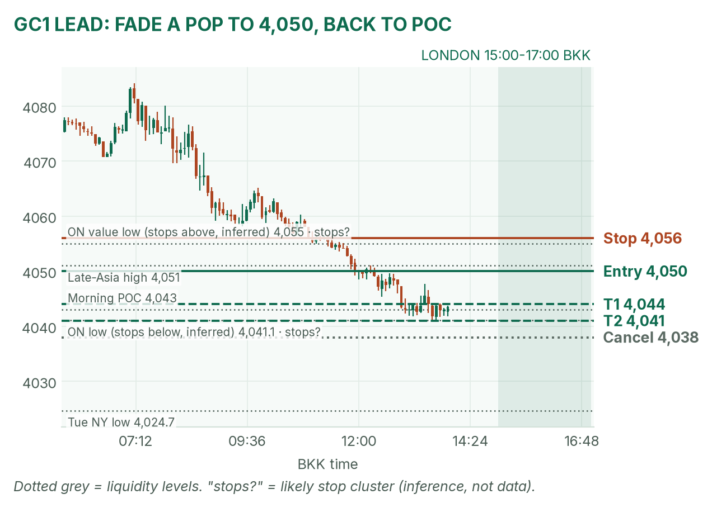
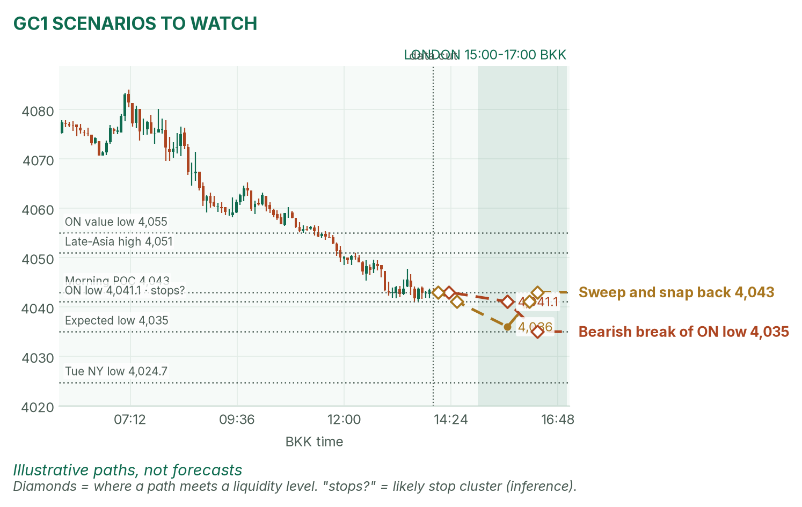
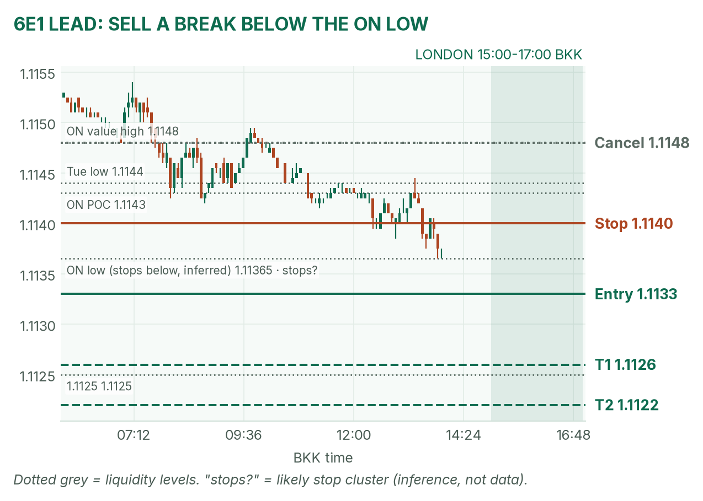
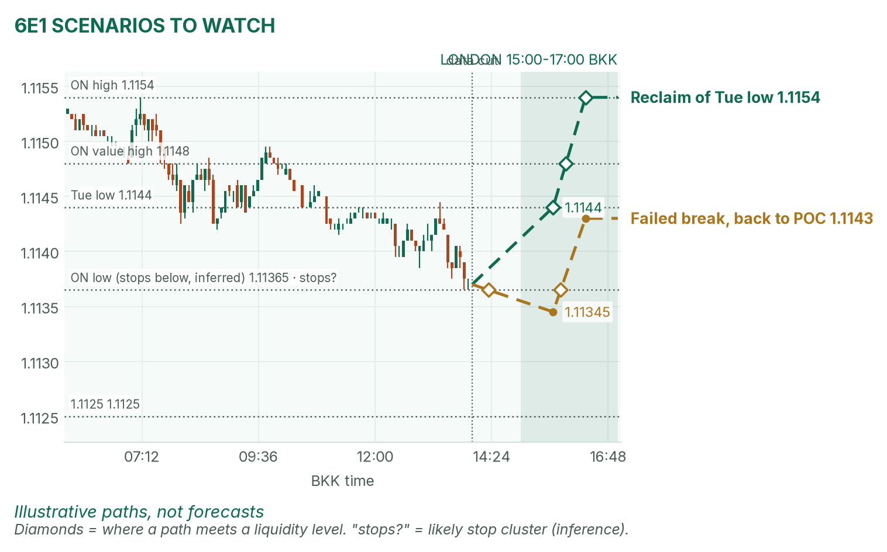

Oil knocked gold off its high. The euro is sitting on its overnight low.
Window 15:00–17:00 BKK (UK on winter time). Data cut 14:00 BKK: GC 4,043.5, 6E 1.1137 (TopstepX Z26, last complete 5m bar). Levels only. Ideas, not advice.
Summary
GC: sell a failed pop to 4,050. Entry 4,050, stop 4,056, target 4,041 (1.5R). About 38%.
6E: sell a 5-minute close below the 15:00–15:30 range low and 1.11365. Entry 1.1133, stop 1.1140, target 1.1122 (1.6R). About 36%.
No release inside the window. The Fed decides at 01:00.
Flat by 17:00, no matter what.
The market story
Gold peaked at 4,084.1 near 07:10 and slid 43 points. The push came from oil: a claimed Houthi strike on a Saudi refinery lifted crude about 1.7%. Dearer oil means more inflation worry, so investors want higher yields, and the 10-year US yield is back above 5%. Gold pays no interest, so higher yields make it less attractive. The euro is down too. Europe imports most of its energy, so dearer oil hurts it (April's read).
The bigger picture matches. The euro closed lower Monday and Tuesday; gold gave back Tuesday's bounce. Fed days often drift in London.
How I read it: both are leaning down. Gold is resting on its morning POC, so I want to sell a bounce, not chase the low. The euro is pressed on its low, where a break can run.
News (BKK)
Time
Event
Forecast
Prior
Read
20:45
Bank of Canada decision
Hike to 2.50% (19 of 34 in a Reuters poll)
not in my source
After the window.
21:30
US weekly oil stocks (EIA)
About +15,000 barrels
not in my source
After the window. A big draw means dearer oil, so weaker gold and euro.
Thu 01:00
Fed decision (Warsh speaks 01:30)
Hold at 3.75%–4.00%
3.75%–4.00%
Hawkish tone is cold for gold and the euro; soft is hot.
No release inside 15:00–17:00, so no no-trade zone today. A confirmed refinery hit could move oil any time.
Levels to watch
Level
GC
6E
Overnight high
4,084.1
1.1154
Overnight value area (where 70% of trading happened)
4,055–4,081
1.1139–1.1148
Overnight POC (busiest price)
4,076
1.1143
Morning POC (10:00–14:00)
4,043
1.1140
Overnight low
4,041.1
1.11365
Tuesday high / low
4,079.4 / 4,001.6
1.12005 / 1.1144
Typical window range (median / 80th pct, 20 days)
16 / 21 pts
20 / 31 pips
Gold (GC1)
Bias: down, with oil and yields. My London gold rule fades the edges of the 15:00–15:30 range back to the POC. Price already sits at the POC, so I fade a failed bounce.
The trade: fade a pop to the late-Asia high
Entry
4,049–4,051 (plan 4,050): after 15:30, a push to the range high near 4,051 that closes back below it on a 5m bar
Stop
4,056: above 4,055, the bottom of the overnight value area.
Targets
1R partial 4,044 · full target 4,041, the overnight low (1.5R)
Cancel
Price trades 4,038 before entry, or no fill by 16:15
Probability
~38%, an estimate. Basis: London gold ranges mostly failed and snapped back to the POC in my Aug–Oct study (not significant); 9 points to target is about half a typical 16-point window.
Why: it sells with the trend, where sellers stepped in late in Asia. April agrees: oil plus yields are the pressure. If gold breaks 4,041 first, don't sell the hole; let it go.

GC 5-minute bars to 14:00 BKK, window shaded. The slide from 4,084 rests on the 4,041–4,043 shelf.

Illustrative paths, not forecasts: a break of the overnight low and a sweep that snaps back.
Scenarios to watch
Bearish break: a 15m close below 4,041.1 runs the stops there. Aims for 4,035, the bottom of the expected range.
Sweep and snap back: a poke to about 4,036 that closes back above 4,041. Aims for 4,043, the morning POC.
Euro (6E1)
Bias: down, with price under Tuesday's low. My London rule for 6E is to trade breaks of the 15:00–15:30 range.
The trade: bearish range breakout
Entry
1.1132–1.1134 (plan 1.1133), on a 5m close below the 15:00–15:30 range low and 1.11365
Stop
1.1140: back at the morning POC, so the break failed
Targets
1R partial 1.1126 · full target 1.1122, just past the round 1.1125 (1.6R)
Cancel
Price trades 1.1148 before entry, or no fill by 16:30
Probability
~36%, an estimate. Basis: euro London breakouts averaged +0.31R in my study (26 sessions, not significant); 11 pips is about half a typical window.
Why: it trades with the trend. April half-agrees: oil is her drag, but she gives no euro target. If it breaks and closes back above 1.11365 within 15 minutes, get out.

6E 5-minute bars to 14:00 BKK. A slow grind from 1.1154 to the 1.11365 low.

Illustrative paths, not forecasts: a reclaim of Tuesday's low and a failed breakdown.
Scenarios to watch
Bullish reclaim: a 15m close back above 1.1144, Tuesday's low. Aims for 1.1154, the overnight high.
Failed break: a poke under 1.11365 that closes back above it. Aims for 1.1143, the overnight POC.
NQ (not traded in London): 29,951.75, near its overnight high of 29,964.75, with 30,000 above.
Before you click
ORB bases. GC London: 15:00–15:30 range, fade to POC. 6E London: 15:00–15:30 range, trade breakouts.
Checklist. 1) Room to today's max loss? 2) Within daily rules? 3) No release within 30 minutes? 4) Agrees with the bias? 5) At a marked level? 6) Setup tagged? 7) Entry, stop, 1R partial, target set? 8) Calm, not chasing?
Reset (60 seconds). Breathe in 4, hold 4, out 6, five times. Name the feeling in one word. Say the plan aloud. "Eager" or "frustrated"? Wait 5 minutes.